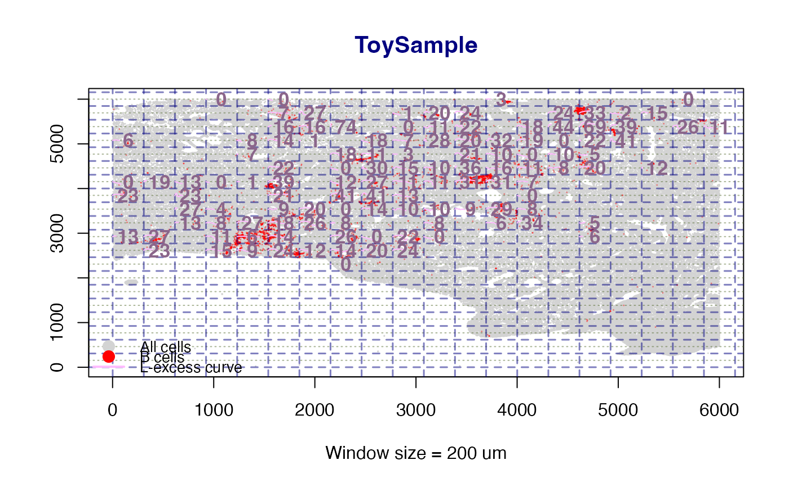
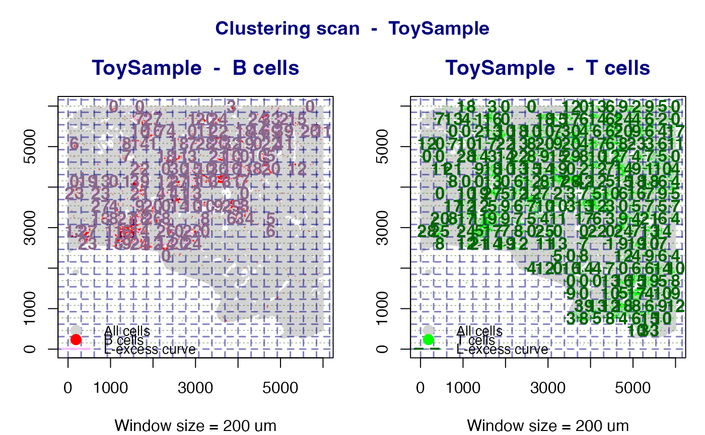

Scan Tissue for Local Immune Cell Clustering (Ripley's L Heatmap)
scan_clustering.RdApplies a sliding-window Ripley's L analysis across the tissue to produce
a spatial clustering map. For each window a K-integral index is
computed as the mean positive excess of the observed L function over its
theoretical CSR value. When plot = TRUE a base-graphics spatial
map is drawn with LOESS-smoothed L-excess curves and numeric CI labels
overlaid inside each qualifying window, plus a legend identifying point
and curve colours.
Usage
scan_clustering(
ws = 500,
sample,
phenotype = c("T cells", "B cells", "Both"),
plot = TRUE,
creep = 1L,
min_cells = 10L,
min_phen_cells = 5L,
label_cex = 1.1,
ldata = NULL
)Arguments
- ws
Numeric. Window side length in microns (default
500).- sample
Character. Sample name in
ldata.- phenotype
One of
"T cells","B cells", or"Both".- plot
Logical. Draw the spatial clustering map? (default
TRUE).- creep
Integer. Grid density factor;
creep = 2overlaps adjacent windows by half a window width, producing a smoother map (default1).- min_cells
Integer. Minimum total cell count required in a window before it is analysed (default
10).- min_phen_cells
Integer. Minimum phenotype-specific cell count per window (default
5).- label_cex
Numeric. Base character expansion for the CI numeric labels drawn inside each window (default
1.1). Increase this value if labels appear too small for your screen or output resolution.- ldata
Named list of data frames, or
NULLto use the globalldataobject (deprecated; pass explicitly).
Value
A named list with elements B and/or T (depending on
phenotype), each containing the Lest objects for all
qualifying windows of that phenotype. Returned invisibly when
plot = TRUE.
Details
The K-integral clustering index for window \(w\) is: $$\text{CI}_w = \frac{1}{N_+}\sum_{i:\,L_i > L_{\text{theo},i}} (L_i - L_{\text{theo},i})$$ where \(N_+\) is the number of spatial lags where the observed L exceeds the theoretical CSR value.
When plot = TRUE the map shows:
All cells as small light-grey points.
Phenotype cells (T cells green, B cells red).
Navy dashed grid lines marking window boundaries.
A LOESS-smoothed L-excess curve inside each qualifying window.
A bold numeric CI label centred in the window.
A legend identifying all point and curve colours.
When phenotype = "Both" two side-by-side panels are produced -
one for B cells and one for T cells - so the two clustering maps can be
compared directly on the same spatial layout.
Examples
data(toy_ldata)
# \donttest{
L_models <- scan_clustering(
ws = 200,
sample = "ToySample",
phenotype = "B cells",
plot = TRUE,
ldata = toy_ldata
)
#> Warning: span too small. fewer data values than degrees of freedom.
#> Warning: pseudoinverse used at 0.95
#> Warning: neighborhood radius 2.05
#> Warning: reciprocal condition number 0
#> Warning: There are other near singularities as well. 4.2025
#> Warning: span too small. fewer data values than degrees of freedom.
#> Warning: pseudoinverse used at 0.95
#> Warning: neighborhood radius 2.05
#> Warning: reciprocal condition number 0
#> Warning: There are other near singularities as well. 4.2025

#> scan_clustering [B cells]: 118 window(s) analysed in 'ToySample'.
cat("B-cell windows analysed:", length(L_models$B), "\n")
#> B-cell windows analysed: 118
# Side-by-side B and T cell panels
L_both <- scan_clustering(
ws = 200,
sample = "ToySample",
phenotype = "Both",
plot = TRUE,
ldata = toy_ldata
)
#> Warning: span too small. fewer data values than degrees of freedom.
#> Warning: pseudoinverse used at 0.95
#> Warning: neighborhood radius 2.05
#> Warning: reciprocal condition number 0
#> Warning: There are other near singularities as well. 4.2025
#> Warning: span too small. fewer data values than degrees of freedom.
#> Warning: pseudoinverse used at 0.95
#> Warning: neighborhood radius 2.05
#> Warning: reciprocal condition number 0
#> Warning: There are other near singularities as well. 4.2025
#> scan_clustering [B cells]: 118 window(s) analysed in 'ToySample'.
#> scan_clustering [T cells]: 263 window(s) analysed in 'ToySample'.

# }